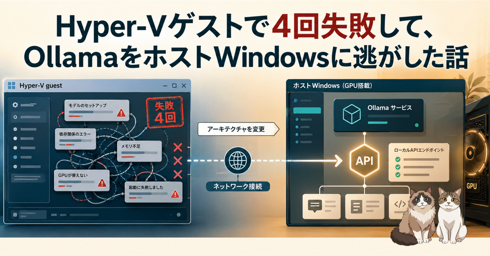

Hyper-V のゲスト Windows でローカル LLM を回したかった。Ollama を入れて、モデルを入れて、GPU を見に行って、だめで、またやり直して。気づいたら 4 回失敗していました。最終的にやったのは「ゲストの中で全部やる」のをやめる、という地味な方針転換でした。
やりたかったことは単純です。Hyper-V のゲスト Windows に開発環境を置いて、その中でローカル LLM も動かす。開発用 CLI からモデルピッカーで Ollama を選んだら、そのまま手元の LLM が返事をする。うまくいけば、開発はゲストに閉じてホストは汚さない、失敗したら仮想マシンごと戻せる、という気持ちのよい構成です。
でも、現実はそうきれいにいきませんでした。Ollama は入る。モデルも入る。API もそれっぽく返る。けれど GPU まわりで詰まる。ドライバなのか、仮想化なのか、Windows の機嫌なのか、ひとつ直したつもりで別のところが怪しくなる。これを 4 回やって、正直、参りました。
途中で、ふと気づきました。ローカル LLM を「ゲストの中で動かす」必要は、本当にあるのか。欲しいのは、ゲスト Windows の中から LLM を使えること。Ollama のプロセスがどこで動いているかは、実はそんなに重要ではない。
だったら、GPU を持っているホスト Windows で Ollama を動かせばいい。ゲストは、その API に HTTP でつなぐだけにする。つまりこういう役割分担です。
これなら、GPU をゲストに渡す話を一切しなくていい。Ollama はホストの普通の Windows アプリとして動く。ゲストはただのクライアントになる。実際、これは効きました。
方針が決まったあとに、もう一段ハマったのが localhost の解釈です。ローカル LLM 周りのツールは、たいてい localhost:11434 を見に行く前提で書かれています。ホスト上で全部動かしている分にはそれで正しい。Ollama もクライアントも同じマシンにいるからです。
でも、Hyper-V ゲストの中でクライアントを動かしていると、localhost はゲスト自身を指します。ホスト Windows ではない。ここでだいぶ混乱しました。ホスト側では Ollama が元気に動いていて、ホストのブラウザや PowerShell から叩けば返る。なのにゲストのクライアントから見ると、Ollama がいないことになる。
「ローカル」と言っているけど、誰から見たローカルなのか。ここを間違えると、ずっと違う住所を見に行く。
そこでクライアント側に、ollama.base_url のような「Ollama の接続先」を明示する設定値を足しました。考え方は単純です。
ollama:
base_url: "http://<host-ip>:11434"この値を、2 か所で同じように使います。
<base_url>/api/tags を見る<base_url> を渡す互換 API の口によって、内部で /v1 を足すかどうかが分かれます。OpenAI 互換として見る場合は /v1 を足す、Anthropic 互換として見る場合は足さない、という具合です。ここを設定ファイル 1 か所に寄せたことで、「モデルピッカーには出るのに起動した側からは見えない」みたいな食い違いが消えました。地味ですが、これでやっとつながりました。
この構成で一番気をつけるのは、Ollama API を外へ開けすぎないことです。ホスト側の Ollama は、ゲストから届くように待ち受けを広げる必要があります。ただし、これはあくまで「同じ物理マシンの中のゲストに渡す」ためのもので、インターネットに出すものではありません。
base_url を設定するLLM の API は、手元の道具として使うぶんには便利ですが、外から誰でも叩ける場所に置くものではありません。「動けばいい」で雑にしないところだと思います。
最初は、ゲストの中でローカル LLM まで完結させるのがきれいだと思っていました。でも今回の感覚だと、開発環境と推論環境は分けたほうが楽でした。ゲストは壊しても戻せる作業場。ホストは GPU を持っている推論係。間は HTTP API でつなぐ。
分けると、考えることも分かれます。開発環境を整える話、GPU で推論する話、API の向き先をそろえる話。ごちゃっと一つに押し込むより、ずっと見通しがよかったです。学んだことを並べると、こんな感じでした。
localhost は、いま動いている側から見た自分自身「全部ここでやる」をやめる判断、個人開発でもけっこう大事だなと思いました。また似たところで詰まったら、まず「本当に同じ箱に入れる必要があるのか」を疑うところから始めます。小さく、動く形から。